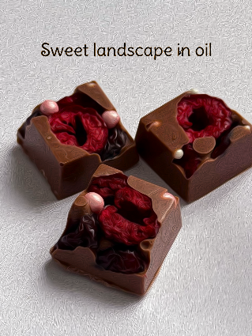
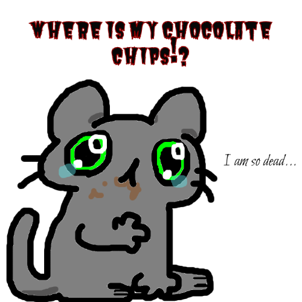
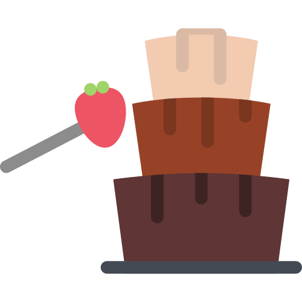
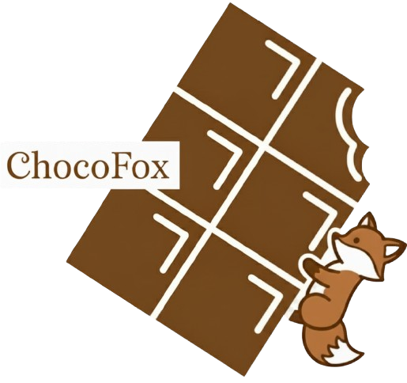

Творча Колекція
Дослідження кольору через візуальне мистецтво у Adobe Color
#F04E1F
#F9907F
#F0731F
#F02A1F
#F0B11F
Інтерактивна Анімація
Інтерактивні Феєрверки

Редакція фото у Photopea
Використовуючи різні фільтри, я знайшла, який цікаво перероблює дизайн фото.

Тематичне зображення у Photopea
Створене було для розвинення навичок у користуванні растрового редактора, але засноване на реальних подіях.
Іконка створена у Method
Основним елементом є шоколад, а для оригінальності додаємо іконку кота і осінні листки.

Іконка з SVGrepo
Під час пошуку цікавого SVG зображення, мене приємно здивувала ця іконка. Проте були зроблені зміни щодо кольору.

Іконка без фону
За допомогою Remove.bg я видалила задній фон для моєї іконки аби вона краще відображалася на сайтах